AnyVis
A visual workspace for creating Manim animations with blocks and a timeline.
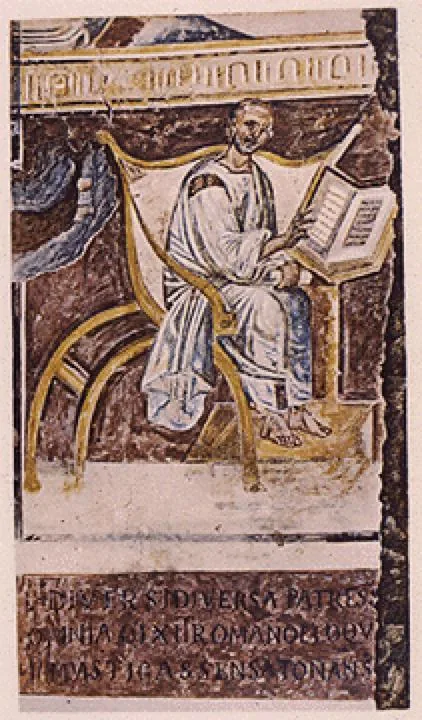
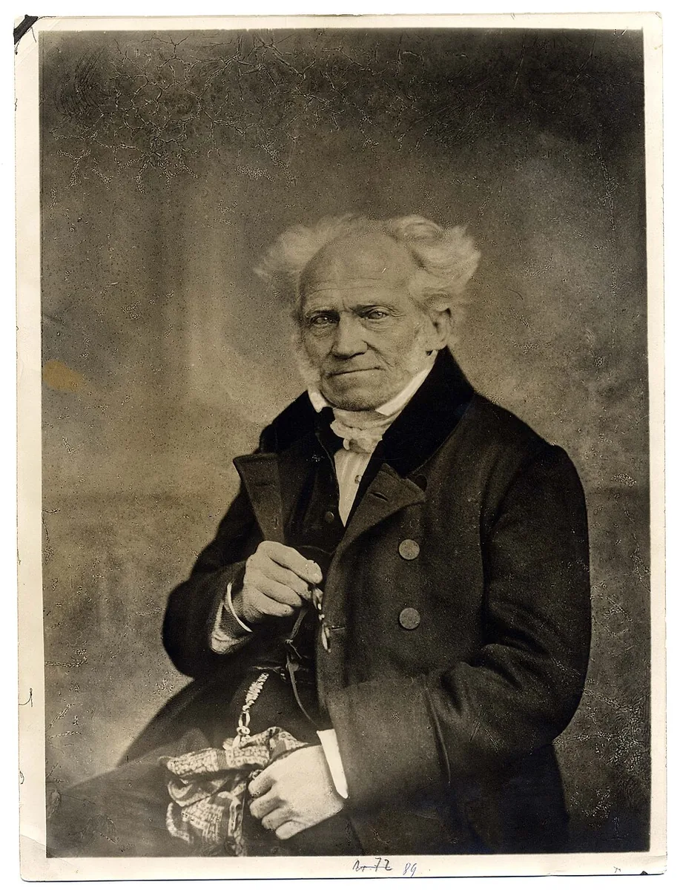
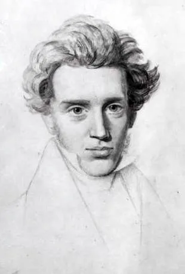
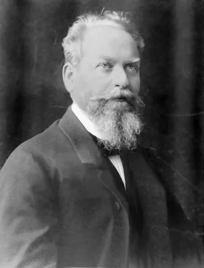
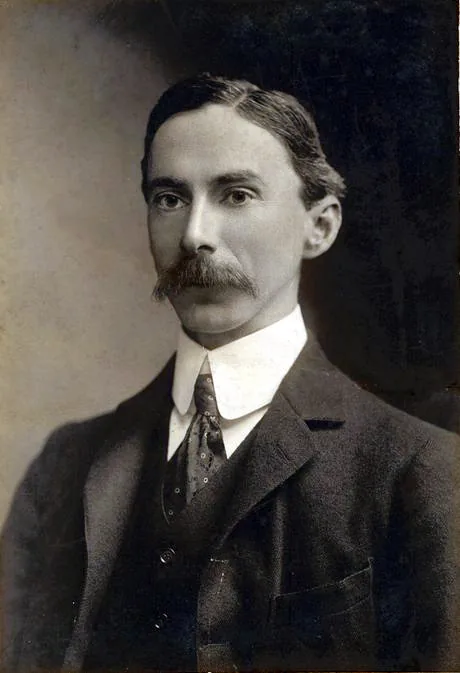
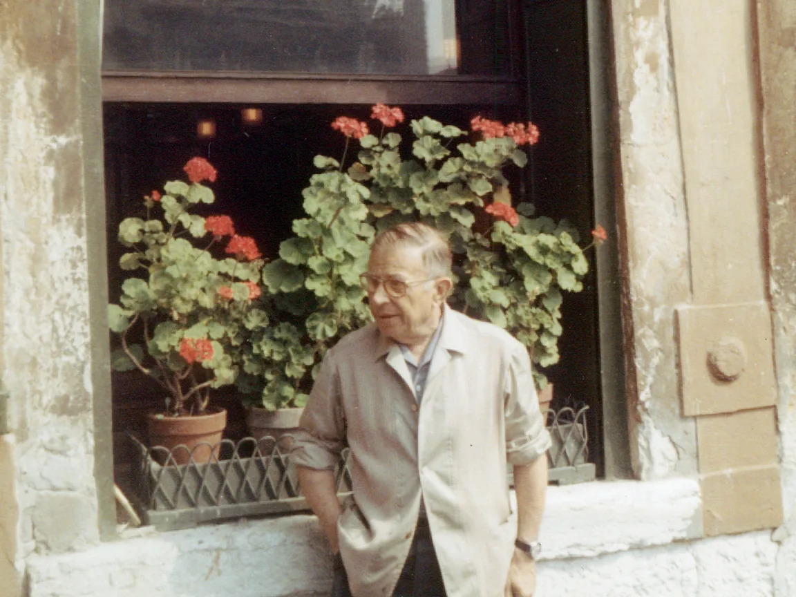
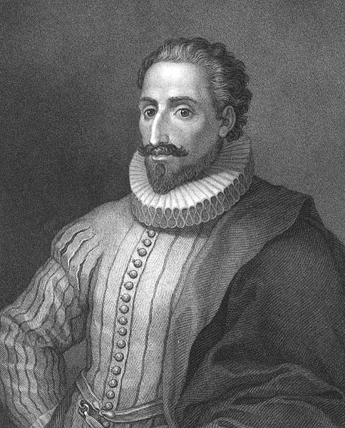
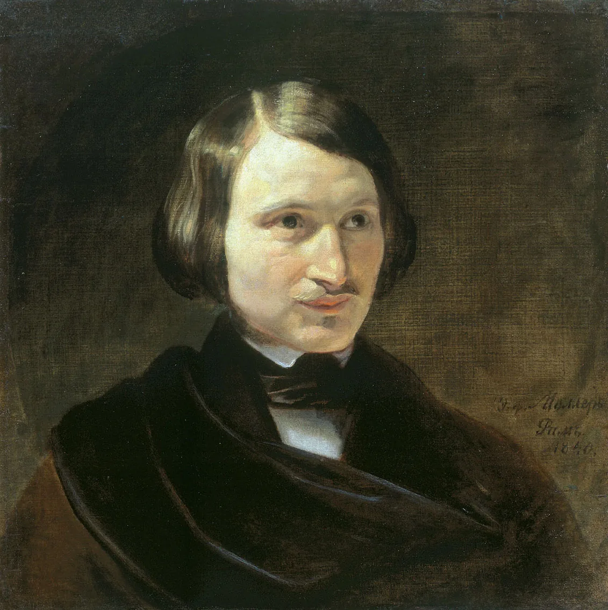
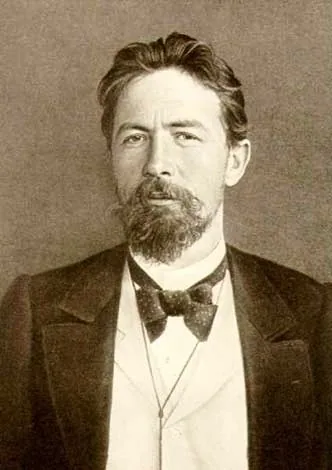
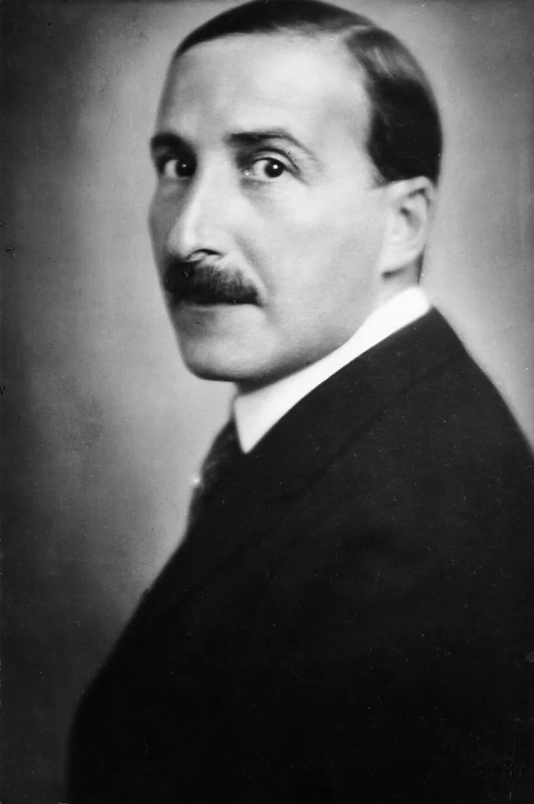
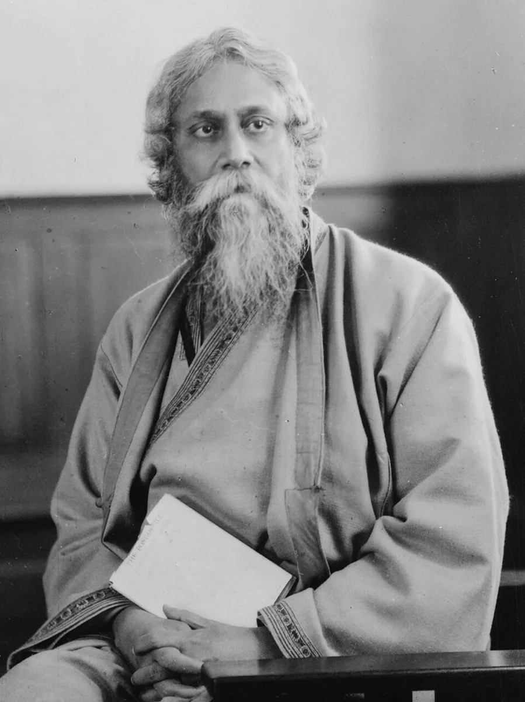
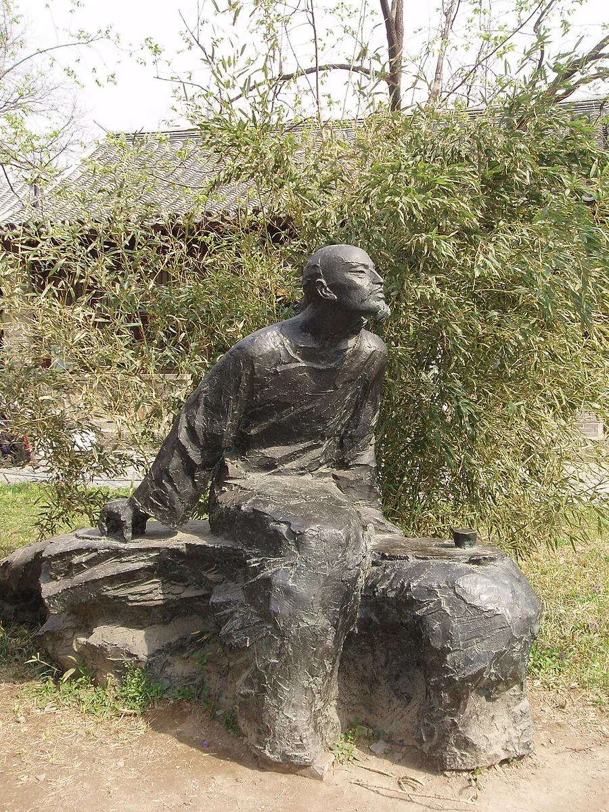
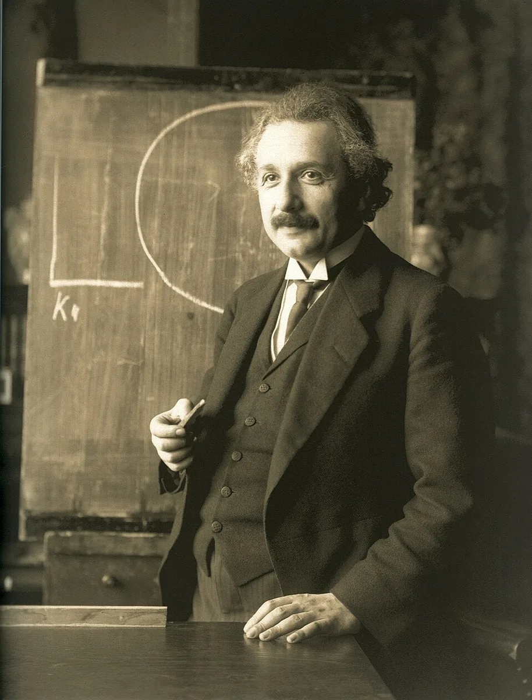


About
Peking University北京大学
Hello, I'm Zhuo Zheng.

A visual workspace for creating Manim animations with blocks and a timeline.
An interactive origami benchmark for vision models, with diagrams, an action interface, and physical simulation.